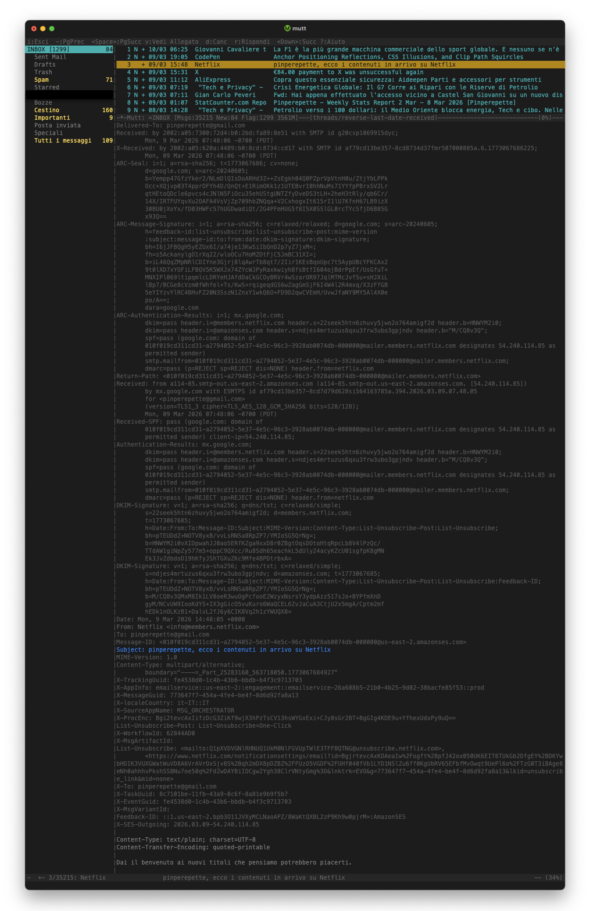
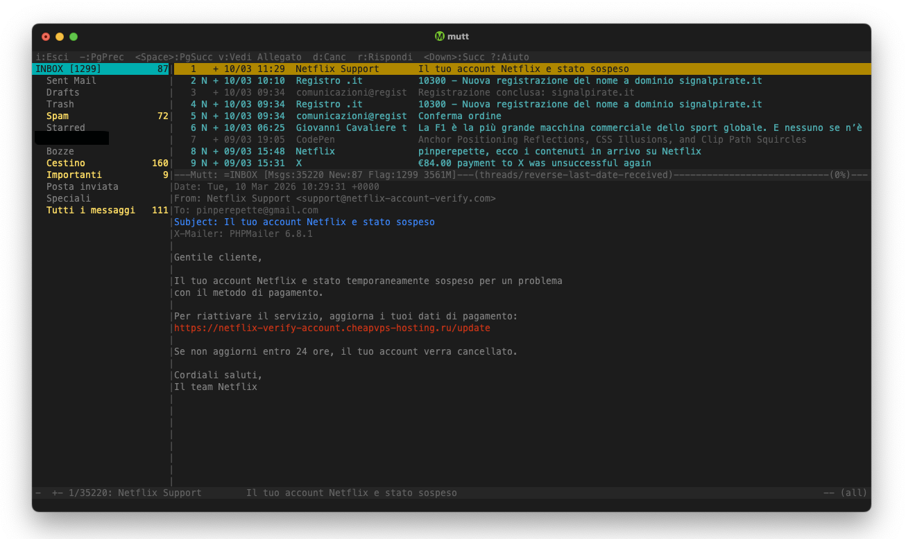
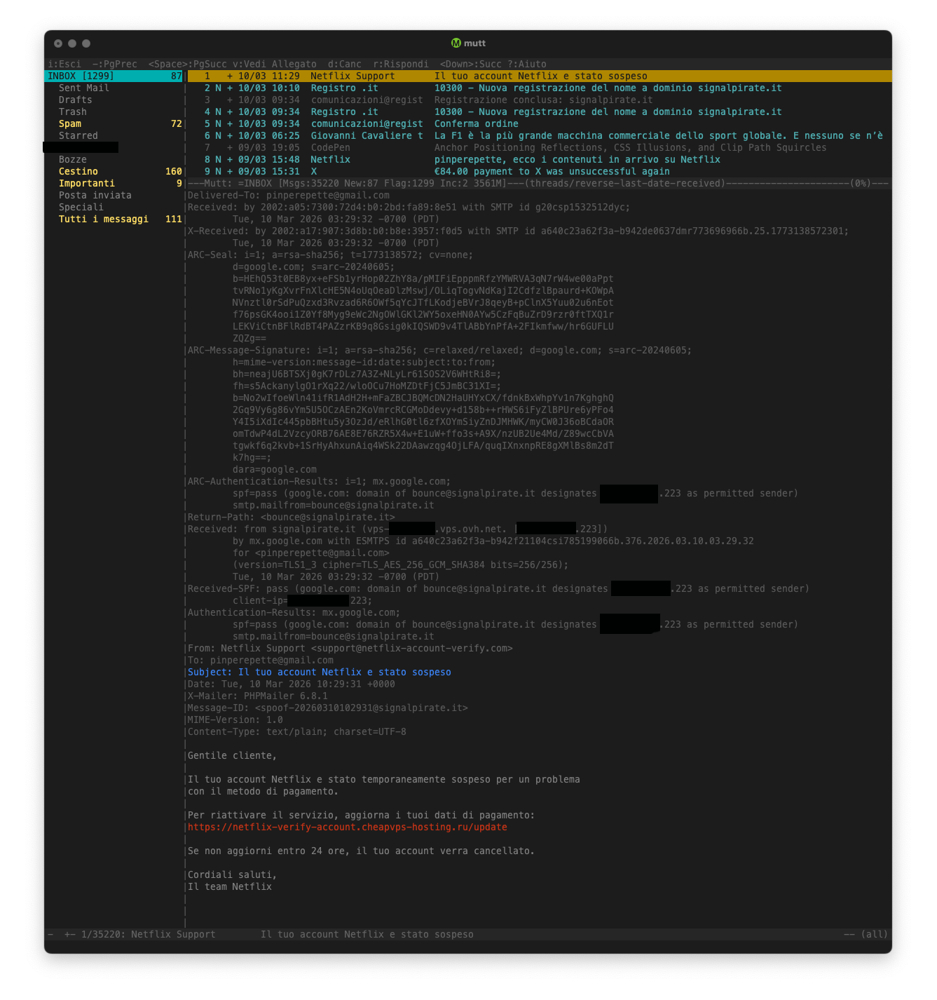
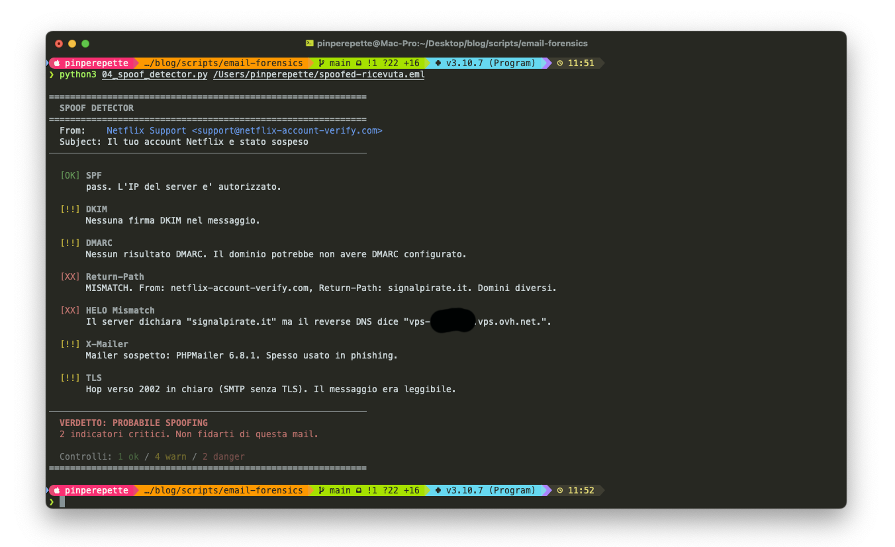
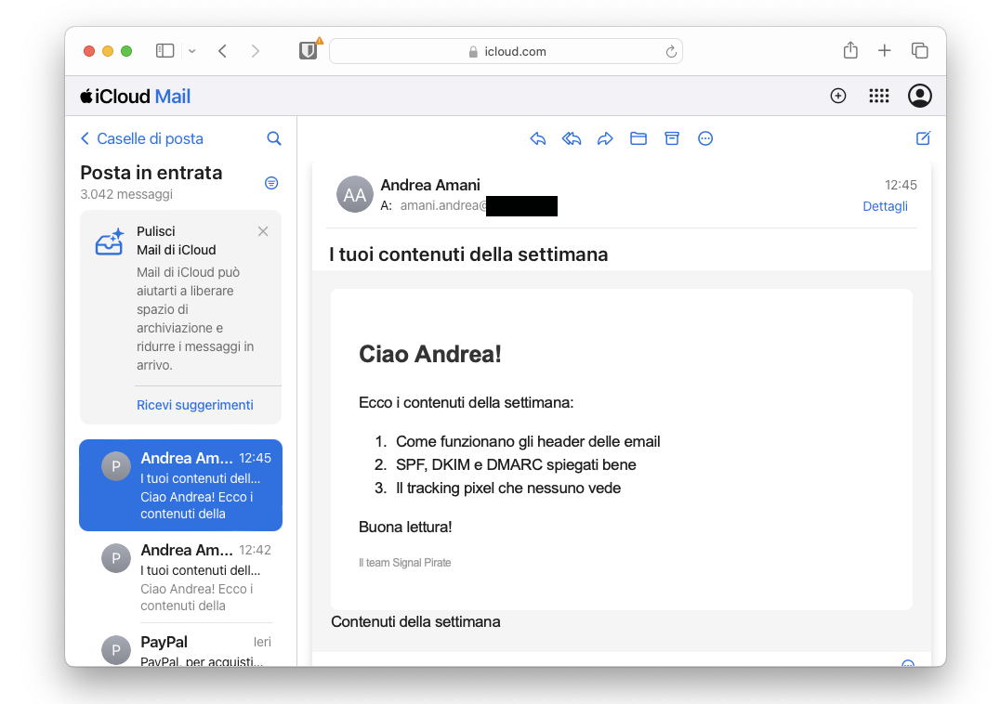
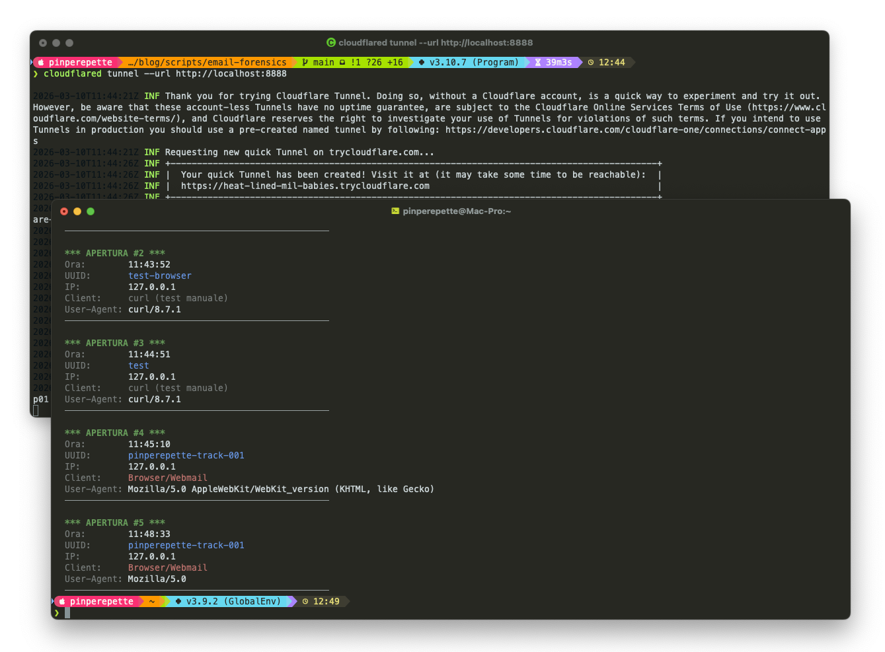

// Il Tracciato Che Nessuno Legge
Sezione 00. L'email non e' un messaggio, e' un percorsoLa iena mi mostra il telefono. "Ho ricevuto una mail da Netflix. Dice che il mio account e' stato sospeso. Legittima?"
Nemmeno la guardo. "Fammi vedere gli header."
"Gli cosa?"
Il problema delle email e' che tutti leggono il messaggio. Nessuno legge la busta. Eppure il contenitore dice tutto. Ogni email che viaggia da un client a una casella attraversa una catena di server SMTP. Ogni server aggiunge un timbro: chi sono, da dove arriva il messaggio, con quale protocollo, a che ora. La posta elettronica funziona come un passaporto: ogni frontiera lascia un timbro. Il timbro si chiama header Received. E' un traceroute della rete postale.
Il bello? Nessuno li cancella. Nessuno li legge. E dicono molto piu' del corpo del messaggio.

Cinque hop minimi. Email aziendali con gateway interni, mailing list e filtri custom? Anche 8 o 10. Ogni hop aggiunge un header Received. La catena completa racconta l'intera storia: da dove e' partito il messaggio, che infrastruttura ha attraversato, quanto tempo ci ha messo, e se qualcuno lungo la strada ha provato a fare il furbo.
// Anatomia di una Mail
Sezione 01. RFC 5321, RFC 5322 e le tre buste"Ok, ma una mail non e' tipo: mittente, destinatario, oggetto, testo?" chiede la iena.
Si', se la guardi di fretta. Ma se conosci le tecnologie che usi e la guardi attentamente, una mail e' fatta di tre strati. Due RFC la definiscono: RFC 5321 (il protocollo SMTP, come viaggia) e RFC 5322 (il formato del messaggio, come e' fatta). La distinzione e' fondamentale.
RCPT TO
Usati da SMTP per il routing.
Non visibili nel messaggio finale.
Date, Message-ID
Received (catena)
DKIM-Signature
Authentication-Results
HTML / plain text
Allegati (MIME)
L'unica parte che l'utente vede.
Il colpo di scena: il From: che vedi nel client e il MAIL FROM dell'envelope possono essere diversi. Il primo e' un header del messaggio (RFC 5322), il secondo e' un comando SMTP (RFC 5321). Sono due cose separate. E' come se la busta di una lettera avesse un mittente diverso dalla firma in fondo alla pagina. Questo e' il motivo per cui lo spoofing funziona cosi' bene: basta cambiare l'header From e il client mostra quello che vuoi.
Ecco gli header reali. Questa e' una mail che Netflix mi ha mandato il 9 marzo 2026. La leggo in mutt, premo h e vedo tutto.
| 1 | Return-Path: <010f019cd311cd31-a2794052-5e37-4e5c-96c3-3928ab0074db-000000@mailer.members.netflix.com> |
| 2 | Delivered-To: pinperepette@gmail.com |
| 3 | Received: from a114-85.smtp-out.us-east-2.amazonses.com (a14-85.smtp-out.us-east-2.amazonses.com. [54.240.114.85]) |
| 4 | by mx.google.com with ESMTPS id af79cd13be357-8cd7d79d628s1564163785a.394.2026.03.09.07.48.05 |
| 5 | for <pinperepette@gmail.com> |
| 6 | (version=TLS1_3 cipher=TLS_AES_128_GCM_SHA256 bits=128/128); |
| 7 | Mon, 09 Mar 2026 07:48:06 -0700 (PDT) |
| 8 | DKIM-Signature: v=1; a=rsa-sha256; q=dns/txt; c=relaxed/simple; |
| 9 | s=22seek5htn6zhuvy5jwo2o764amigf2d; d=members.netflix.com; t=1773067685; |
| 10 | h=Date:From:To:Message-ID:Subject:MIME-Version:Content-Type:List-Unsubscribe-Post:List-Unsubscribe; |
| 11 | bh=pTEUbdZ+NOTVByxB/vvLsRNSa8RpZP7/YMIoSG5OrNg=; |
| 12 | b=HNNYMI2i0vXIDpwahJ0aoSERfKZga9xxD8r8ZBgtQgsDOtoHtqRpcLh8V4lPzQc/... |
| 13 | DKIM-Signature: v=1; a=rsa-sha256; q=dns/txt; c=relaxed/simple; |
| 14 | s=ndjes4mrtuzus6qxu3frw3ubo3gpjndv; d=amazonses.com; t=1773067685; |
| 15 | bh=pTEUbdZ+NOTVByxB/vvLsRNSa8RpZP7/YMIoSG5OrNg=; |
| 16 | b=M/CQ8v30... |
| 17 | Authentication-Results: mx.google.com; |
| 18 | dkim=pass header.i=@members.netflix.com header.s=22seek5htn6zhuvy5jwo2o764amigf2d header.b=HNNYMI2i0; |
| 19 | dkim=pass header.i=@amazonses.com header.s=ndjes4mrtuzus6qxu3frw3ubo3gpjndv header.b="M/CQ8v30"; |
| 20 | spf=pass (google.com: domain of 010f019cd311cd31-...@mailer.members.netflix.com designates 54.240.114.85) |
| 21 | dmarc=pass (p=REJECT sp=REJECT dis=NONE) header.from=netflix.com |
| 22 | X-SES-Outgoing: 2026.03.09-54.240.114.85 |
| 23 | Feedback-ID: ::1.us-east-2.bpb3011JVXyMCLNaoAPZ/8WaKtQXBL2zP9Kh9w0pjrM=:AmazonSES |
| 24 | X-TrackingGuid: fe4538d0-1c4b-43b6-bbdb-b4f3c9713703 |
| 25 | X-MessageGuid: 773647f7-454a-4fe4-be4f-8d6092fa8a13 |
| 26 | X-SourceAppName: MSG_ORCHESTRATOR |
| 27 | X-LocaleCountry: it-IT::IT |
| 28 | From: Netflix <info@members.netflix.com> |
| 29 | To: pinperepette@gmail.com |
| 30 | Subject: pinperepette, ecco i contenuti in arrivo su Netflix |
| 31 | Date: Mon, 9 Mar 2026 14:48:05 +0000 |
| 32 | Message-ID: <010f019cd311cd31-a2794052-5e37-4e5c-96c3-3928ab0074db-000000@us-east-2.amazonses.com> |
32 righe. Smontiamole.
Il Return-Path (riga 1) non e' info@members.netflix.com come il From. E' un indirizzo tecnico con UUID su mailer.members.netflix.com: serve per gestire i bounce. Ogni mail ha un Return-Path diverso, cosi' Netflix sa quale messaggio e' rimbalzato.
Il Received (righe 3-7) mostra che la mail arriva da a114-85.smtp-out.us-east-2.amazonses.com con IP 54.240.114.85. Amazon SES, regione us-east-2 (Ohio). La connessione e' TLS 1.3 con AES-128-GCM: cifrata.
Ci sono due firme DKIM (righe 8-16). La prima firmata da members.netflix.com (Netflix), la seconda da amazonses.com (Amazon). Doppia firma: Netflix configura la propria chiave DKIM su SES, e Amazon aggiunge anche la sua. Entrambe passano.
L'Authentication-Results (righe 17-21) e' il verdetto di Gmail: due DKIM pass, SPF pass, DMARC pass con p=REJECT sp=REJECT. Netflix non scherza: reject sul dominio principale e su tutti i sottodomini.
Poi ci sono gli header interni di Netflix (righe 24-27): X-TrackingGuid (UUID per tracciare questa mail specifica), X-SourceAppName: MSG_ORCHESTRATOR (il servizio interno che ha generato la mail), X-LocaleCountry: it-IT::IT (sa che sono in Italia). Informazioni che Netflix non ha bisogno di esporre, ma che ci racconta l'architettura interna.
Il Message-ID (riga 32) finisce con @us-east-2.amazonses.com: conferma la regione AWS.
Il bello: il client di posta (Gmail, Apple Mail, Outlook) ti mostra solo From, To, Subject. Tre righe su trentadue. Le altre ventinove? Nascoste. E raccontano tutto: l'IP del server (54.240.114.85), il provider (Amazon SES us-east-2), la doppia firma crittografica (Netflix + Amazon), la policy antispoof (REJECT), il servizio interno che ha generato la mail (MSG_ORCHESTRATOR), persino che Netflix sa che sei in Italia.
// L'Header Received
Sezione 02. Il timbro che ogni server aggiunge"Ok ma come lo leggo sto header Received?" chiede la iena.
Ogni header Received ha un formato preciso, definito nella RFC 5321 sezione 4.4. Cinque campi chiave:
| Campo | Significato | Esempio |
|---|---|---|
| from | Il server che ha inviato il messaggio a questo hop | from a114-85.smtp-out.us-east-2.amazonses.com |
| by | Il server che ha ricevuto il messaggio a questo hop | by mx.google.com |
| with | Il protocollo usato per il trasferimento | with ESMTPS (SMTP + STARTTLS) |
| id | Identificatore univoco assegnato dal server ricevente | id A3B2C1D4E5 |
| for | Il destinatario (non sempre presente, privacy) | for <pinperepette@gmail.com> |
| timestamp | Data e ora locale del server con timezone | Sun, 09 Mar 2026 07:48:06 -0700 (PDT) |
Il campo with ti dice se la connessione era cifrata. ESMTPS significa SMTP + TLS (bene). SMTP senza la S? Testo in chiaro. Qualsiasi router nel mezzo puo' leggere tutto.
Il campo from spesso include sia l'hostname che l'IP tra parentesi quadre. L'hostname lo dichiara il server che si presenta (HELO/EHLO). L'IP lo vede il server ricevente dalla connessione TCP. Se i due non corrispondono, qualcuno sta mentendo.
Attenzione: il primo Received puo' essere falsificato dal server di origine. Tutti gli altri sono aggiunti dai server intermedi e sono molto piu' affidabili. Ma l'IP tra parentesi quadre e' sempre verificato dal server ricevente. Quindi: hostname? Fiducia zero. IP? Affidabile.
// Ricostruire il Percorso
Sezione 03. Dal basso verso l'alto"Quindi leggo gli header Received e capisco dove e' passata la mail?" dice la iena.
Si', ma al contrario. Il primo header Received che trovi nel messaggio e' l'ultimo server che ha toccato la mail (il tuo MDA). L'ultimo header Received in fondo e' il primo server (il punto di origine). Ogni server aggiunge il suo timbro in cima. Quindi per ricostruire il percorso devi leggere dal basso verso l'alto.
Prendiamo la catena della mail Netflix. Tre hop:
Hop 1: il backend di Netflix genera la mail e la passa ad Amazon SES via API. Hop 2: SES la firma con DKIM e la spedisce dal suo server SMTP (a114-85.smtp-out.us-east-2.amazonses.com, IP 54.240.114.85). Hop 3: Gmail la riceve su mx.google.com, verifica SPF/DKIM/DMARC, e la consegna nella mia inbox.
Nota l'IP: 54.240.114.85 e' nel range di Amazon SES. Coerente con il X-SES-Outgoing: 2026.03.09-54.240.114.85 nell'header. L'hostname a114-85.smtp-out.us-east-2.amazonses.com ci dice anche la regione AWS: us-east-2 (Ohio). Netflix non ha server SMTP propri: usa Amazon come corriere.
Nota i timestamp: hop 1 e hop 2 hanno lo stesso timestamp (14:48:05 UTC). L'API call e' istantanea. Tra hop 2 e hop 3 passa 1 secondo. Totale: la mail impiega meno di 2 secondi da Netflix alla mia inbox. Se vedi un delta di 30 minuti tra due hop, due possibilita'. O il messaggio e' finito in coda (greylisting, rate limiting), o ha attraversato un filtro antispam lento. O terza opzione: qualcuno lo ha intercettato, modificato, e reinoltrato. Il delta temporale e' il primo indicatore di anomalia.
// Identificare il Client
Sezione 04. X-Originating-IP, X-Mailer e User-Agent"E dal mittente cosa posso capire?" chiede la iena.
Dipende da quanti header il suo server decide di esporre. Alcuni aggiungono header non standard ma molto rivelatori:
| 1 | X-Originating-IP: [93.44.172.88] |
| 2 | X-Mailer: Microsoft Outlook 16.0 |
| 3 | User-Agent: Mozilla Thunderbird 128.0 |
X-Originating-IP e' l'IP del client che si e' connesso al server SMTP. Non tutti i provider lo includono. Outlook.com lo fa, Gmail no (lo ha tolto nel 2014, privacy). Yahoo lo fa ancora.
X-Mailer e User-Agent rivelano il software usato per comporre il messaggio. Outlook, Thunderbird, Apple Mail, mutt. Ognuno ha il suo header e la sua versione. Da qui capisci il sistema operativo, a volte persino la versione specifica.
Una mail di phishing "dalla tua banca" che ha X-Mailer: PHPMailer 6.8 e un X-Originating-IP russo? Non e' la tua banca.
| Header | Chi lo aggiunge | Cosa rivela |
|---|---|---|
| X-Originating-IP | Outlook.com, Yahoo, alcuni ISP | IP reale del mittente |
| X-Mailer | Il client di posta | Software e versione (Outlook, Thunderbird) |
| User-Agent | Il client di posta (standard MIME) | Software, versione, OS |
| X-Google-DKIM-Signature | Firma interna di Google, conferma routing | |
| X-Microsoft-Antispam | Microsoft 365 | Score antispam, classificazione interna |
| X-SES-Outgoing | Amazon SES | Mail inviata tramite il servizio email di AWS |
| X-Mailgun-Sid | Mailgun | Mail inviata tramite piattaforma Mailgun |
Header Order Fingerprinting
C'e' un'altra chicca. Ogni software SMTP genera gli header in un ordine diverso. L'ordine e' una firma.
| Software | Header caratteristici (in ordine) |
|---|---|
| Postfix | Received → X-Spam-Status → X-Spam-Level |
| Microsoft Exchange | Received → Received → X-MS-Exchange-Organization |
| PHPMailer | X-Mailer: PHPMailer prima di tutto il resto |
| Amazon SES | X-SES-Outgoing → Feedback-ID |
X-Google-DKIM-Signature → X-Gm-Message-State |
Gli header sono anche una fingerprint del software che ha generato il messaggio. Una mail che dice di venire da Gmail ma ha header tipici di PHPMailer non e' partita da Gmail.
// Reputazione dell'IP
Sezione 05. DNS, ASN, RBL, GeoIPOra che hai gli IP dalla catena Received, la domanda e': a chi appartengono?
Primo passo: reverse DNS. L'IP 209.85.221.54 ha un PTR record? Se si', punta a mail-wr1-f54.google.com. Coerente con l'header. Se il PTR manca, o punta a un hostname che non c'entra niente col dominio dichiarato, bandiera rossa.
| 1 | # Reverse DNS sull'IP della mail Netflix |
| 2 | dig -x 54.240.114.85 +short |
| 3 | # a114-85.smtp-out.us-east-2.amazonses.com. |
| 4 | |
| 5 | # ASN lookup |
| 6 | whois -h whois.radb.net 54.240.114.85 |
| 7 | # origin: AS16509 (Amazon.com, Inc.) |
| 8 | |
| 9 | # Blacklist check (Spamhaus) |
| 10 | dig 53.8.240.54.zen.spamhaus.org +short |
| 11 | # NXDOMAIN = non in blacklist (bene) |
| 12 | # 127.0.0.x = in blacklist (male) |
Secondo passo: ASN lookup. L'Autonomous System Number ti dice a quale organizzazione appartiene quel blocco di IP. AS16509 e' Amazon. AS15169 e' Google. AS8075 e' Microsoft. La mail Netflix arriva da Amazon SES (AS16509): coerente. Se una mail "da Netflix" arrivasse da un IP in un AS di un hosting economico russo, c'e' qualcosa che non torna.
Terzo passo: blacklist (RBL, Real-time Blackhole List). Spamhaus, AbuseIPDB, Barracuda. Un IP in blacklist non significa automaticamente spam (i falsi positivi esistono), ma e' un dato in piu'. La query e' geniale: inverti l'IP e fai un DNS lookup su un dominio speciale. Se risponde, l'IP e' in lista.
Quarto passo: GeoIP. MaxMind GeoLite2 ti da' la geolocalizzazione approssimativa dell'IP. Non e' precisa a livello di indirizzo, ma a livello di citta'/regione si'. Una mail "dalla tua banca italiana" che parte da un IP geolocalizzato a Lagos merita attenzione.
// SPF
Sezione 06. Chi e' autorizzato a spedire per conto tuo"Ok ho capito gli IP. Ma come faccio a sapere se quell'IP e' davvero autorizzato a mandare mail per quel dominio?" chiede la iena.
SPF (Sender Policy Framework, RFC 7208). Il proprietario del dominio pubblica nel DNS un record TXT che elenca gli IP autorizzati a inviare email per quel dominio. Il server ricevente controlla se l'IP che gli ha consegnato la mail e' nella lista.
| 1 | # Controlliamo l'SPF di Netflix (il dominio dell'envelope sender) |
| 2 | dig TXT mailer.members.netflix.com +short |
| 3 | "v=spf1 include:amazonses.com ~all" |
| 4 | |
| 5 | # Seguiamo la catena: cosa include amazonses.com? |
| 6 | dig TXT amazonses.com +short |
| 7 | "v=spf1 ip4:199.255.192.0/22 ip4:199.127.232.0/22 ip4:54.240.0.0/18 ip4:69.169.224.0/20 ip4:23.249.208.0/20 ip4:23.251.224.0/19 ip4:76.223.176.0/20 ip4:54.240.64.0/19 ip4:54.240.96.0/19 ip4:76.223.128.0/19 -all" |
Tradotto: "le email con envelope sender @mailer.members.netflix.com possono partire solo dai blocchi IP di Amazon SES. Tutto il resto va rifiutato (-all = hard fail)."
Il nostro IP 54.240.114.85 cade nel range 54.240.0.0/18? Si'. Quindi SPF = pass. Netflix delega tutto ad Amazon SES, e SES pubblica i propri blocchi IP nell'SPF. Catena di fiducia pulita.
I possibili risultati:
| Risultato | Meccanismo | Cosa significa |
|---|---|---|
| pass | IP nella lista | Il server e' autorizzato. Tutto ok. |
| fail | -all |
IP non autorizzato. Rifiutare o marcare come spam. |
| softfail | ~all |
IP probabilmente non autorizzato. Accettare con sospetto. |
| neutral | ?all |
Il dominio non si pronuncia. Nessuna garanzia. |
| none | Nessun record SPF | Il dominio non ha configurato SPF. Chiunque puo' spedire. |
Il grande equivoco
"Quindi con SPF siamo a posto?" chiede la iena.
No. E questo e' il punto che quasi nessuno spiega bene. SPF non controlla il mittente che l'utente vede. Controlla il dominio dell'envelope sender, il MAIL FROM della sessione SMTP. Sono due cose diverse.
MAIL FROM: bounce@mailer.example.com ← SPF controlla questo
From: Banca Intesa <sicurezza@intesasanpaolo.com> ← l'utente vede questoSPF puo' dire PASS perche' controlla mailer.example.com. Ma l'utente vede intesasanpaolo.com. Questo e' esattamente il motivo per cui DMARC esiste.
SPF protegge i server. DMARC protegge gli esseri umani.
// DKIM
Sezione 07. La firma crittografica nel messaggio"E se qualcuno modifica il messaggio dopo l'invio? SPF controlla solo l'IP, mica il contenuto," dice la iena.
Esatto. Per quello c'e' DKIM (DomainKeys Identified Mail, RFC 6376). Il server di invio firma crittograficamente il messaggio. La chiave pubblica sta nel DNS. Il server ricevente la scarica e verifica la firma.
La mail Netflix ha due firme DKIM. La prima e' di Netflix:
| 1 | DKIM-Signature: v=1; a=rsa-sha256; q=dns/txt; c=relaxed/simple; |
| 2 | s=22seek5htn6zhuvy5jwo2o764amigf2d; d=members.netflix.com; t=1773067685; |
| 3 | h=Date:From:To:Message-ID:Subject:MIME-Version:Content-Type:List-Unsubscribe-Post:List-Unsubscribe; |
| 4 | bh=pTEUbdZ+NOTVByxB/vvLsRNSa8RpZP7/YMIoSG5OrNg=; |
| 5 | b=HNNYMI2i0vXIDpwahJ0aoSERfKZga9xxD8r8ZBgtQgsDOtoHtqRpcLh8V4lPzQc/... |
La seconda e' di Amazon SES:
| 1 | DKIM-Signature: v=1; a=rsa-sha256; q=dns/txt; c=relaxed/simple; |
| 2 | s=ndjes4mrtuzus6qxu3frw3ubo3gpjndv; d=amazonses.com; t=1773067685; |
| 3 | bh=pTEUbdZ+NOTVByxB/vvLsRNSa8RpZP7/YMIoSG5OrNg=; |
| 4 | b=M/CQ8v30... |
Due firme, stesso body hash (pTEUbdZ+NOTVByxB/...). Netflix configura la propria chiave DKIM su Amazon SES, e SES aggiunge anche la sua. Doppia garanzia: se una delle due chiavi viene compromessa, l'altra tiene. Smontiamo i campi:
a=rsa-sha256: algoritmo di firma (RSA con hash SHA-256)c=relaxed/simple: canonicalization. "relaxed" sugli header (tollera whitespace), "simple" sul body (nessuna normalizzazione)d=members.netflix.com: il dominio che firmas=22seek5htn6zhuvy5jwo2o764amigf2d: il selettore. Serve a trovare la chiave pubblica nel DNSh=from:to:subject:...: gli header firmati. Se qualcuno modifica il Subject, la firma saltabh=...: hash del body (body hash). Se qualcuno aggiunge una riga al corpo, salta anche questob=...: la firma vera e propria, base64
Per verificare, scarichi la chiave pubblica dal DNS:
| 1 | dig TXT 22seek5htn6zhuvy5jwo2o764amigf2d._domainkey.members.netflix.com +short |
| 2 | "v=DKIM1; k=rsa; p=MIIBIjANBgkqhkiG9w0BAQEFAAOCAQ8A..." |
Il selettore (s=22seek5htn6zhuvy5jwo2o764amigf2d) + il dominio (d=members.netflix.com) formano la query DNS: 22seek5htn6zhuvy5jwo2o764amigf2d._domainkey.members.netflix.com. La chiave pubblica sta nel campo p=. La usi per verificare che la firma b= sia valida sugli header elencati in h= e sul body hash bh=.
Il bello: DKIM firma il contenuto, non il canale. Anche se il messaggio passa per 10 server, la firma resta valida perche' nessuno (in teoria) modifica gli header firmati ne' il body. Il server ricevente verifica la firma sulla copia che gli arriva. Se passa, il messaggio non e' stato toccato.
// DMARC
Sezione 08. Il collante tra SPF e DKIM"Ok, SPF controlla l'IP, DKIM controlla la firma. Ma uno spoofer non puo' passare SPF con un dominio e mettere un altro dominio nel From?" chiede la iena.
Esattamente. E qui entra DMARC (Domain-based Message Authentication, Reporting and Conformance, RFC 7489). DMARC fa una cosa semplice ma cruciale: verifica che il dominio nell'header From: (quello che l'utente vede) sia allineato con almeno uno tra SPF e DKIM.
In pratica: SPF puo' passare con MAIL FROM: bounce@sender.com, ma se l'header From: banca@intesa.it non e' allineato col dominio SPF, DMARC fallisce.
| 1 | dig TXT _dmarc.members.netflix.com +short |
| 2 | "v=DMARC1; p=reject; rua=mailto:dmarc-reports@netflix.com" |
I campi chiave:
p=reject: policy. Cosa fare se DMARC fallisce.none= non fare niente (solo monitorare).quarantine= metti in spam.reject= rifiuta il messaggio. Netflix usa reject. Cosi' chi prova a spoofare @members.netflix.com si vede la mail rifiutata dal server destinatario.rua=: dove mandare i report aggregati
Se tutti e tre passano, la mail e' autenticata. Netflix fa le cose bene: p=reject. Chi prova a spoofare @members.netflix.com si vede la mail rifiutata dal server ricevente. Non tutti pero' sono cosi' diligenti. Molti domini hanno p=none (solo monitoraggio), che non blocca nulla. E p=reject ha un effetto collaterale: rompe le mailing list (ci arriviamo).
// La Targa del Messaggio
Message-ID analysis"C'e' un altro header che i forensi guardano sempre?" chiede la iena.
Il Message-ID. E' la targa unica del messaggio. Ogni mail ne ha uno, generato dal server che l'ha creata. E il formato della targa rivela l'infrastruttura.
Message-ID: <010f019cd311cd31-a2794052-5e37-4e5c-96c3-3928ab0074db-000000@us-east-2.amazonses.com>UUID + regione AWS + dominio amazonses.com. Coerente con l'infrastruttura Netflix su Amazon SES. Ora guarda cosa succede con un phishing:
From: PayPal <security@paypal.com>
Message-ID: <123456@cheapvps.ru>Il From dice PayPal. Il Message-ID dice cheapvps.ru. Bandiera rossa immediata.
| Provider | Pattern Message-ID |
|---|---|
| Gmail | <xxxxxxxxxx@mail.gmail.com> |
| Amazon SES | <UUID@regione.amazonses.com> |
| Microsoft | <AM0PR...@outlook.com> |
| Postfix | <random@hostname> |
| PHPMailer | <random@hostname-vps> |
Il Message-ID e' la targa del messaggio. Se il dominio non corrisponde all'infrastruttura dichiarata, qualcosa non torna.
// I Timestamp Non Mentono
Sezione 09. Delta hop-to-hop e anomalieOgni header Received ha un timestamp. La differenza tra un hop e il successivo ti racconta cose che nessun filtro antispam ti dira'.
| Hop | Timestamp (UTC) | Delta | Interpretazione |
|---|---|---|---|
| 1 → 2 | 14:48:05 → 14:48:05 | 0s | Netflix backend → Amazon SES. API call istantanea. |
| 2 → 3 | 14:48:05 → 14:48:06 | 1s | Amazon SES → Gmail. Normale. |
Totale: 1 secondo da Netflix alla mia inbox Gmail. Nella norma per una mail che fa due hop. Ma se vedi questo:
| Hop | Timestamp | Delta | Interpretazione |
|---|---|---|---|
| 1 → 2 | 14:48:05 → 14:48:05 | 0s | Ok. |
| 2 → 3 | 14:48:05 → 15:20:47 | 32 min | Greylisting? Coda? Filtro lento? Intercettazione? |
32 minuti tra hop 2 e 3. Tre possibilita'. Greylisting: il server destinatario rifiuta temporaneamente il messaggio al primo tentativo (tecnica antispam, il server legittimo riprova dopo 5-30 minuti, lo spammer no). Coda piena: il server di destinazione era sovraccarico e il messaggio ha aspettato in coda. Ispezione: il messaggio e' stato trattenuto per analisi (DLP aziendale, filtro antispam pesante).
Attenzione anche ai timestamp negativi: se l'hop 3 ha un timestamp precedente all'hop 2, o un server ha l'orologio sfasato (NTP non configurato), o qualcuno ha manipolato gli header. Un orologio sfasato e' sorprendentemente comune su server mal configurati.
// Dove Passa la Mail
Sezione 10. GeoIP e ASN su ogni hop"E posso vedere su una mappa dove passa la mia mail?" chiede la iena.
Si'. Ogni IP pubblico nella catena Received ha una posizione geografica approssimativa (GeoIP) e un proprietario (ASN). MaxMind GeoLite2 e' il database gratis che usano tutti.
Esempio di percorso ricostruito:
| Hop | IP | ASN | Localita' | Provider |
|---|---|---|---|---|
| 1 | interno | n/a | n/a | Netflix backend (AWS) |
| 2 | 54.240.114.85 | AS16509 | US (us-east-2, Ohio) | Amazon.com (SES) |
| 3 | mx.google.com | AS15169 | varia (anycast) | Google LLC |
La mail parte dall'infrastruttura Netflix su AWS, esce da un server Amazon SES in us-east-2 (Ohio), e arriva ai server Gmail (anycast, quindi il punto di ingresso piu' vicino al server SES). Percorso coerente: Netflix usa AWS, SES in us-east-2, Gmail ha punti di presenza ovunque. Se la stessa mail partisse da un IP geolocalizzato a Lagos o da un range noto per spam, sarebbe un'altra storia.
Gli IP interni non hanno geolocalizzazione. Sono hop dentro l'infrastruttura del provider. Li ignori nella mappatura, ma li noti nella catena per contare i salti.
// Quando Qualcuno Finge
Sezione 11. Spoofing detection: le bandiere rosse"Ok, torniamo alla mail della mia banca. Come faccio a capire se e' finta?" chiede la iena.
Checklist. Cinque controlli, cinque secondi, zero software speciale. Solo gli header.
| # | Controllo | Bandiera rossa |
|---|---|---|
| 1 | SPF nell'Authentication-Results | spf=fail o spf=softfail. L'IP non e' autorizzato dal dominio. |
| 2 | DKIM nell'Authentication-Results | dkim=fail. Il messaggio e' stato modificato o la firma e' falsa. |
| 3 | DMARC nell'Authentication-Results | dmarc=fail. Il From: non e' allineato con SPF/DKIM. |
| 4 | HELO mismatch nei Received | L'hostname dichiarato (HELO) non corrisponde al reverse DNS dell'IP. |
| 5 | Catena Received incoerente | Un hop dichiara un dominio (es. intesasanpaolo.com) ma l'IP appartiene a un hosting economico o un VPS in un paese diverso. |
Vediamo un esempio. Qualcuno prova a spoofare Netflix per rubarti le credenziali:
| 1 | Return-Path: <bounce-xyz@cheaphosting.ru> |
| 2 | Received: from mail.netflix.com (vps-47293.cheaphosting.ru [91.202.54.17]) |
| 3 | by mx.google.com with SMTP |
| 4 | Authentication-Results: mx.google.com; |
| 5 | spf=fail (google.com: domain of info@members.netflix.com does not designate 91.202.54.17 as permitted sender) |
| 6 | dkim=none; |
| 7 | dmarc=fail (p=REJECT) header.from=members.netflix.com |
| 8 | From: Netflix <info@members.netflix.com> |
| 9 | Subject: Il tuo account Netflix e' stato sospeso |
Cinque bandiere rosse in 9 righe:
- Return-Path punta a
cheaphosting.ru, non a mailer.members.netflix.com - Received: l'HELO dice
mail.netflix.comma il reverse DNS dicevps-47293.cheaphosting.ru. Mismatch. Netflix usa Amazon SES, non un VPS russo. - SPF fail: l'IP 91.202.54.17 non e' nel range di Amazon SES autorizzato da Netflix
- DKIM none: nessuna firma. Netflix firma tutte le sue mail con DKIM su members.netflix.com.
- DMARC fail con
p=REJECT: il server destinatario dovrebbe rifiutare questa mail. E Gmail lo fa.
"E questa mail Netflix spoofata arriva nella mia inbox?" chiede la iena.
No, perche' Netflix ha p=REJECT. Gmail la rifiuta. Ma non tutti i domini sono cosi' protetti. Molti hanno p=none (solo monitoraggio) o non hanno DMARC proprio. In quel caso, la mail spoofata passa. E l'unica difesa e' saper leggere gli header.
// Le Mailing List Rompono Tutto
Sezione 12. List-ID, Sender, e perche' DKIM salta"Ma allora perche' non tutti usano DMARC con reject e basta?" chiede la iena.
Perche' le mailing list esistono. E rompono tutto.
Quando mandi una mail a una mailing list (tipo Mailman, Google Groups, listserv), succede questo:
- Tu mandi la mail alla lista. DKIM firma il messaggio.
- Il software della lista riceve il messaggio.
- La lista modifica il Subject (aggiunge
[nome-lista]). - La lista aggiunge un footer al body ("Per cancellarti...").
- La lista re-invia il messaggio a tutti gli iscritti.
Risultato: il body e' cambiato (footer aggiunto), il Subject e' cambiato (prefisso lista). La firma DKIM originale? Invalida. Il body hash non corrisponde piu'. Gli header firmati nemmeno.
Se il dominio del mittente ha DMARC p=reject, il server del destinatario vede DKIM fail, SPF fail (l'IP e' quello della mailing list, non del mittente originale), DMARC fail. Risultato: la mail legittima viene rifiutata.
Per questo le mailing list aggiungono header specifici:
| 1 | List-ID: <security-announce.lists.example.org> |
| 2 | List-Unsubscribe: <mailto:security-announce-unsubscribe@lists.example.org> |
| 3 | Sender: security-announce-bounces@lists.example.org |
| 4 | X-BeenThere: security-announce@lists.example.org |
Il Sender: header identifica chi ha effettivamente spedito il messaggio (la lista), distinto dal From: (l'autore originale). Il List-ID identifica la lista. Sono header standard (RFC 2369).
La soluzione moderna si chiama ARC (Authenticated Received Chain, RFC 8617). In pratica ogni intermediario (mailing list, forwarding service) aggiunge la propria firma e attesta che il messaggio era autentico quando l'ha ricevuto. E' come una catena di custodia.
Lab tip: vuoi vedere DKIM che salta? Manda una mail firmata DKIM a una mailing list Mailman (puoi installarne una con Docker). Poi guarda gli header del messaggio che arriva agli iscritti. Vedrai la firma DKIM originale con dkim=fail, e (se la lista supporta ARC) gli header ARC che attestano il passaggio.
// Il Pixel Che Ti Spia
Sezione 13. Tracking pixel, fingerprinting e DNS callback"Ok, finora abbiamo guardato la mail dal lato di chi la riceve. Ma chi la manda puo' sapere se l'ho aperta?" chiede la iena.
Si'. E non gli serve niente di sofisticato. Basta un'immagine.
Il tracking pixel e' un'immagine 1x1 pixel (trasparente, invisibile) inserita nell'HTML della mail. Quando il client di posta carica le immagini, fa una richiesta HTTP al server del mittente. Il server logga tutto: timestamp dell'apertura, IP del destinatario, User-Agent (che rivela il client di posta), Accept-Language, e qualsiasi altro header HTTP.
| 1 | <!-- Tracking pixel nascosto nell'HTML della mail --> |
| 2 | <img src="https://track.sender.com/px/a1b2c3d4.gif" |
| 3 | width="1" height="1" style="display:none" /> |
L'UUID nel path (a1b2c3d4) e' unico per ogni destinatario. Cosi' il mittente sa chi ha aperto, non solo che qualcuno ha aperto.
Ma non finisce qui. Le tecniche avanzate:
| Tecnica | Come funziona | Cosa rivela |
|---|---|---|
| Redirect chain | Il pixel risponde con 302 attraverso 2/3 hop prima di servire l'immagine | Se il client segue i redirect (alcuni proxy li bloccano), latenza di rete |
| Cache busting | Query string dinamica (?t=1710063272) o Cache-Control: no-store |
Conta aperture multiple. Senza, il browser cacherebbe l'immagine alla prima apertura |
| DNS callback | Il pixel punta a un sottodominio unico: {uuid}.px.sender.com |
Alcuni client e gateway antispam effettuano prefetch DNS degli URL presenti nell'HTML. Questo puo' generare una query DNS anche quando l'immagine non viene caricata. Rivela il resolver DNS (ISP/azienda) |
| Fingerprinting HTTP | Il server logga tutti gli header HTTP della richiesta | Accept, Accept-Encoding, Connection, Cache-Control. Ogni combinazione identifica il client |
| TLS fingerprint | JA3/JA4 hash dal TLS handshake | Identifica il client anche senza User-Agent. Apple Mail, Gmail proxy, Outlook hanno fingerprint diversi |
I client di posta reagiscono in modo diverso:
| Client | Comportamento immagini | IP visibile al tracker |
|---|---|---|
| Apple Mail | Prefetch automatico (Mail Privacy Protection). Carica le immagini via proxy Apple prima che tu apra la mail. | IP Apple, non il tuo. Ma il tracker sa che qualcuno con Apple Mail ha ricevuto la mail. |
| Gmail | Image proxy. Tutte le immagini passano per googleusercontent.com. |
IP Google. Il tracker non vede il tuo IP reale. Ma sa che l'hai aperta. |
| Thunderbird | Immagini bloccate di default. Chiede conferma all'utente. | Se non carichi le immagini: niente. Zero tracking. |
| Outlook | Immagini bloccate di default nelle mail esterne. | Come Thunderbird. Ma se clicchi "Scarica immagini", il tuo IP reale. |
| mutt | Client testuale. Non carica immagini. Mai. | Niente. Zero. Il tracking pixel non esiste per mutt. |
La tecnica DNS callback: anche quando blocchi le immagini, alcuni gateway antispam e sistemi di scanning effettuano prefetch DNS sugli URL presenti nell'HTML. Se il pixel punta a {uuid}.px.sender.com, il tuo client fa una query DNS a quel sottodominio unico. Il DNS autoritativo del sender logga la query. Sa che hai aperto la mail, senza che tu abbia caricato nessuna immagine. L'unica difesa: mutt, o un client che non fa prefetch DNS sull'HTML.
// Difesa: Come Ispezionare
Sezione 14. Mutt, curl, e l'arte di non farsi tracciare"Ok, mi hai spaventato. Come mi difendo?" chiede la iena.
Mutt. Un client email da terminale. Non carica immagini, non esegue HTML, non fa prefetch DNS. Vedi il sorgente del messaggio cosi' com'e'. Il modo piu' sicuro per analizzare una mail sospetta.
| 1 | # Aprire mutt e visualizzare gli header completi |
| 2 | mutt -f ~/Mail/INBOX |
| 3 | # Seleziona il messaggio, premi 'h' per mostrare tutti gli header |
| 4 | # Premi '|' (pipe) e salva: cat > /tmp/mail-headers.txt |
| 5 | |
| 6 | # Cercare pixel nascosti nel sorgente HTML |
| 7 | grep -iE '(width="1"|height="1"|display:\s*none|1x1)' /tmp/mail-body.html |
| 8 | |
| 9 | # Estrarre tutti gli URL di immagini esterne |
| 10 | grep -oP 'src="https?://[^"]+"' /tmp/mail-body.html |
| 11 | |
| 12 | # Ispezionare un URL di tracking senza rivelare il tuo client |
| 13 | curl -v -o /dev/null "https://track.sender.com/px/a1b2c3d4.gif" |
| 14 | # Vedi gli header HTTP di risposta senza eseguire JS o caricare redirect |
Il grep alla riga 7 cerca i pattern tipici dei pixel: dimensioni 1x1, display:none, immagini microscopiche. Alla riga 10 estrai tutti gli URL di immagini esterne. Cosi' vedi dove puntano prima di caricarle.
Il curl alla riga 13 ti permette di ispezionare il server di tracking senza rivelare il tuo client email reale. Il server vede curl come User-Agent, non Apple Mail o Outlook. E puoi usare opzioni come --resolve per non fare nemmeno la query DNS pubblica.
Per l'analisi degli header c'e' un approccio sistematico:
| 1 | # 1. Estrarre la catena Received (ordine cronologico) |
| 2 | grep -i "^Received:" /tmp/mail-headers.txt | tac |
| 3 | |
| 4 | # 2. Verificare SPF manualmente |
| 5 | dig TXT example.com +short | grep spf |
| 6 | |
| 7 | # 3. Verificare DKIM (selettore dall'header DKIM-Signature) |
| 8 | dig TXT selector._domainkey.example.com +short |
| 9 | |
| 10 | # 4. Verificare DMARC |
| 11 | dig TXT _dmarc.example.com +short |
| 12 | |
| 13 | # 5. Reverse DNS su ogni IP della catena |
| 14 | dig -x 209.85.221.54 +short |
| 15 | |
| 16 | # 6. Blacklist check |
| 17 | dig 54.221.85.209.zen.spamhaus.org +short |
Regola d'oro: non aprire mai una mail sospetta in un client grafico. Usa mutt o un editor di testo. Guarda gli header prima del contenuto. Controlla SPF, DKIM, DMARC nell'Authentication-Results. Verifica che l'IP nei Received corrisponda al dominio dichiarato. Se qualcosa non torna, non fidarti.
// Laboratorio
Sezione 15. Sette script, zero dipendenze esterne"Bello, ma posso provare?" chiede la iena.
Sette script Python nella cartella scripts/email-forensics/. Tutti usano solo la stdlib Python e dig (preinstallato su macOS e Linux). Zero dipendenze.
| Script | Cosa fa | Uso |
|---|---|---|
| 01_header_parser.py | Legge un file .eml, ricostruisce la catena Received in ordine cronologico, calcola il delta temporale tra ogni hop, segnala connessioni non cifrate e HELO mismatch | python3 01_header_parser.py mail.eml |
| 02_spf_dkim_dmarc_check.py | Dato un dominio, interroga il DNS: record SPF (segue la catena include), chiave pubblica DKIM (dato il selettore), policy DMARC. Opzionale: reverse DNS e blacklist check su un IP | python3 02_spf_dkim_dmarc_check.py members.netflix.com --selector 22seek5htn6zhuvy5jwo2o764amigf2d --ip 54.240.114.85 |
| 03_tracking_pixel_server.py | Server HTTP che serve un 1x1 GIF trasparente. Logga tutto: IP, User-Agent, Accept-Language, header HTTP. Classifica il client (Gmail proxy, Apple Mail prefetch, Thunderbird, Outlook). Dashboard HTML. Salva in SQLite | python3 03_tracking_pixel_server.py --port 8888 --log tracking.db |
| 04_spoof_detector.py | Analizza un file .eml e segnala 7 indicatori di spoofing: SPF, DKIM, DMARC, Return-Path mismatch, HELO mismatch, DKIM alignment, header sospetti. Verdetto finale con semaforo | python3 04_spoof_detector.py mail.eml |
| 05_pixel_hunter.py | Cerca tracking pixel nel body HTML: immagini 1x1, display:none, UUID nel path, link con parametri di tracking (lnktrk, trkid, utm_*). Lista tutte le risorse esterne | python3 05_pixel_hunter.py mail.eml |
| 06_forge_spoof.py | Genera due file .eml: una mail spoofata (finto Netflix, Return-Path russo, PHPMailer, SPF fail, DKIM assente, tracking pixel nascosto) e una legittima (Amazon SES, doppia firma DKIM, DMARC pass). Per confronto con lo spoof detector | python3 06_forge_spoof.py |
| 07_pixel_demo.py | Demo completa: avvia un server pixel, genera una mail HTML con pixel embedded e una versione HTML standalone. Apri con mutt: zero tracking. Apri nel browser: il server logga l'apertura in tempo reale | python3 07_pixel_demo.py |
Vuoi provare? Salva una mail come .eml (in Thunderbird: File > Salva come. In Gmail: menu tre puntini > Scarica messaggio. In mutt: premi | e scrivi cat > mail.eml). Poi lancia gli script. python3 scripts/email-forensics/01_header_parser.py mail.eml e guarda cosa esce.
Demo: Spoofing Reale su Gmail
"Ma funziona davvero?" chiede la iena.
Proviamoci. Da una VPS con porta 25 aperta, ci connettiamo direttamente al MX di Gmail e mandiamo una mail con il From: finto. Nessun account SMTP, nessun relay. Solo una connessione TCP sulla porta 25 e il protocollo SMTP parlato a mano.
Primo tentativo: spoofing del dominio esatto netflix.com. Gmail risponde:
550 5.7.26 Unauthenticated email from netflix.com is not accepted
due to domain's DMARC policy.Netflix ha p=REJECT. Gmail rifiuta la mail prima ancora di accettarla. DMARC fa esattamente quello per cui e' stato progettato.
Secondo tentativo: dominio inesistente netflix-account-verify.com, senza autenticazione. Gmail risponde:
550 5.7.26 Your email has been blocked because the sender
is unauthenticated. Gmail requires all senders to
authenticate with either SPF or DKIM.Dal 2024 Gmail richiede che almeno SPF o DKIM passino. Senza, non entra niente.
Terzo tentativo: aggiungiamo un record SPF al dominio del nostro server, cosi' l'envelope sender e' autenticato. Ma il From: nell'header resta finto. Stessa tecnica dei phisher veri: dominio lookalike con infrastruttura propria.
Questa volta Gmail risponde 250 2.0.0 OK. La mail arriva. Per riuscirci servono condizioni precise: un dominio con SPF valido, un IP con reputazione pulita, TLS attivo, reverse DNS configurato. In condizioni normali Gmail la classificherebbe come spam o sospetta. Ma per la demo, basta che arrivi.

Sembra una mail Netflix. Ma premiamo h in mutt per vedere gli header completi:

Ora lanciamo il detector sulla mail ricevuta:

SPF passa (l'IP della VPS e' autorizzato per signalpirate.it), ma il detector becca tutto il resto: Return-Path su un dominio diverso dal From:, HELO che non corrisponde al reverse DNS, nessuna firma DKIM, X-Mailer PHPMailer. Due indicatori critici, quattro warning. Verdetto: probabile spoofing.
La mail e' arrivata. Ma gli header l'hanno tradita.
Demo: Il Pixel Che Ti Vede
"Ok lo spoofing lo becchiamo. Ma il tracking pixel?" chiede la iena.
Mandiamo una mail vera, da un account reale, con un contenuto innocuo: "Ecco i contenuti della settimana". Dentro l'HTML, nascosto, un tag invisibile:
<img src="https://server/px/pinperepette-track-001.gif"
width="1" height="1" style="display:none" alt="">Un pixel trasparente 1x1, display:none. Il client email non lo mostra. Ma quando carica l'HTML, fa una richiesta HTTP al server. E il server logga tutto.
La mail arriva su iCloud. Sembra una normale newsletter:

Nel terminale, il pixel server registra ogni apertura:

Ogni apertura: timestamp, UUID, User-Agent. Apple Mail, Gmail web, Outlook: tutti caricano il pixel. Ogni volta che riapri, il contatore sale. Il mittente sa quante volte hai letto la mail, quando e con quale dispositivo.
Mutt non carica niente. Non esegue HTML, non fa richieste HTTP, non tradisce. Zero log sul server.
Nota: questi sono laboratori educativi. Lo scopo e' capire come funziona il tracking per potersi difendere, non per tracciare gli altri.
// Il Tracciato Non Si Cancella
ConclusioneLa iena mi guarda. "Quindi ogni mail che mando dice a tutti dove sono, cosa uso e quando l'ho scritta?"
Non proprio a tutti. Ma a chi sa leggere, si'. Ricapitolando:
- Ogni email attraversa una catena di server. Ogni server aggiunge un header Received con IP, hostname, protocollo e timestamp. Nessuno lo cancella.
- L'header From: che vedi nel client puo' essere falsificato. L'IP nel Received no.
- SPF controlla se l'IP e' autorizzato a spedire per quel dominio. DKIM firma crittograficamente il messaggio. DMARC verifica che il From: sia allineato con almeno uno dei due.
- I timestamp hop-to-hop rivelano ritardi anomali: greylisting, code, filtri lenti, o intercettazione.
- GeoIP e ASN ti dicono dove sono i server e a chi appartengono. Una mail "dalla tua banca" che transita da un VPS russo non e' la tua banca.
- I tracking pixel sanno se apri la mail, quando, quante volte, con quale client. Il DNS callback funziona anche se blocchi le immagini.
- Le mailing list rompono DKIM modificando il messaggio. ARC e' la soluzione, ma non tutti lo supportano.
- Mutt e' l'unico client che non tradisce. Non carica immagini, non esegue HTML, non fa prefetch. Il modo piu' sicuro per leggere email sospette.
"E la mail di Netflix era legittima?"
Si'. Return-Path su mailer.members.netflix.com, IP 54.240.114.85 (Amazon SES us-east-2) nel range autorizzato, doppia firma DKIM (Netflix + Amazon), DMARC pass con policy reject su dominio e sottodomini. Tre secondi di header e la risposta era li'. Confrontala con la mail spoofata: Return-Path russo, SPF fail, DKIM assente, DMARC fail. Il contenuto diceva "Il tuo account e' stato sospeso". Gli header dicevano "truffa".
Il client di posta ti mostra From, To, Subject. Tre righe su venti. Il resto e' dietro le quinte. E' come giudicare una nave guardando solo la bandiera. Le altre diciassette righe contengono IP, hostname, firme crittografiche, timestamp, protocolli. Ogni server che tocca il messaggio lascia un'impronta indelebile. Lo spoofer puo' falsificare il From. Puo' falsificare il primo Received (quello generato dal suo server). Ma non puo' falsificare quelli aggiunti dai server successivi. Per questo l'analisi parte sempre dal basso. Il tracker puo' nascondere un pixel. Non puo' nascondersi da chi guarda il sorgente.
Signal Pirate